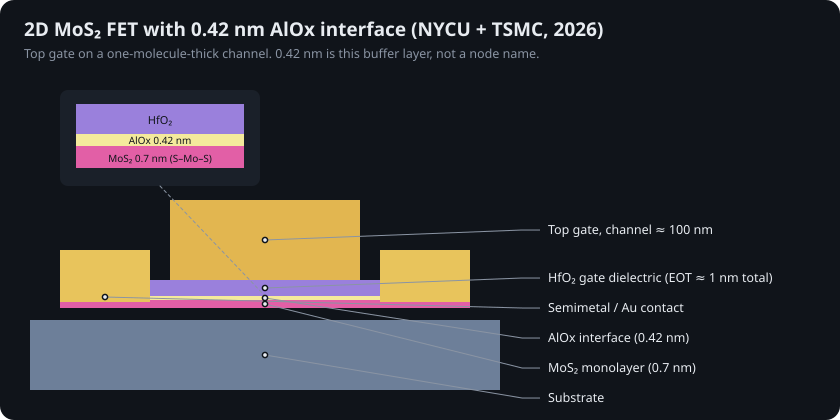
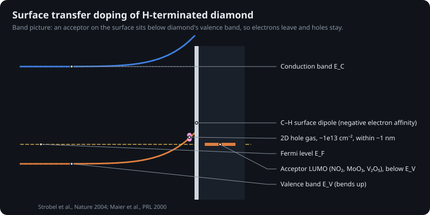
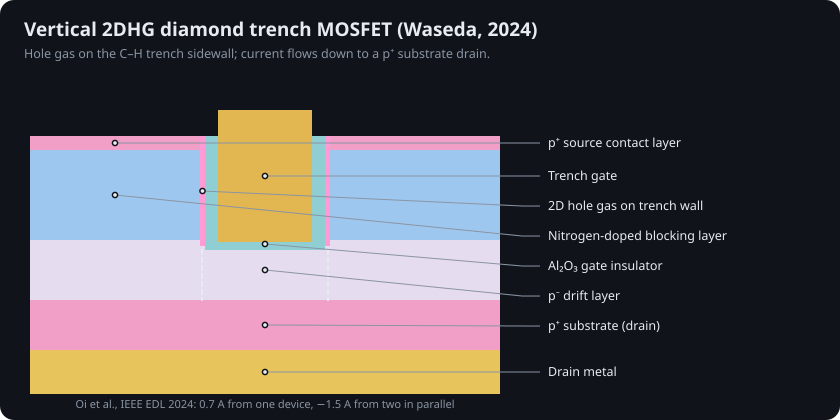
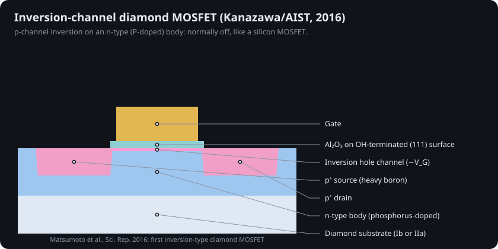
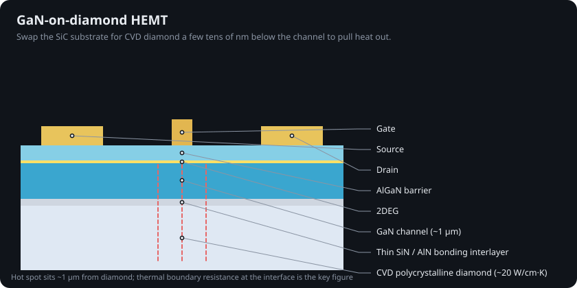
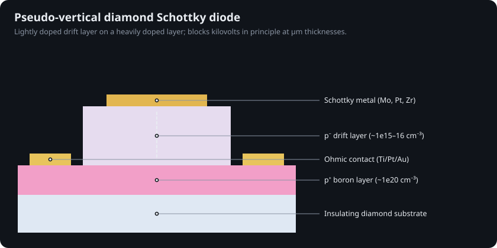
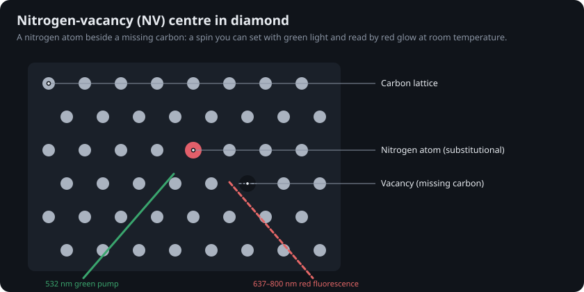
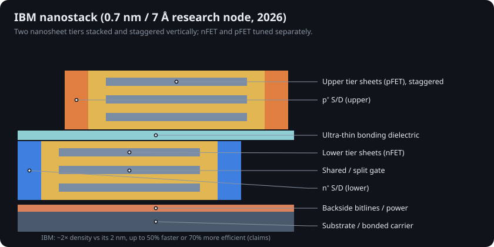
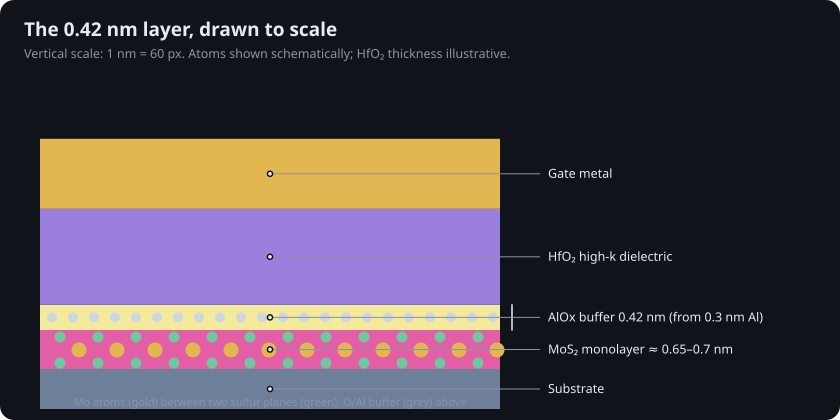

RV32-WUJI: a RISC-V CPU on MoS₂

Fudan University built a 32-bit RISC-V processor from 5,900 monolayer MoS₂ transistors with a 25-cell 2D standard-cell library, on a 4-inch sapphire wafer. The previous 2D record was 115 transistors.
How the switch at the heart of every chip changed shape: germanium point contacts, planar silicon, FinFETs, gate-all-around nanosheets, IBM's 7 Å nanostack and one-molecule-thick MoS₂. Plus the materials that could replace silicon, from GaN and GaAs to diamond. Every number is sourced; every simulation is open.
Drag across the background to stir the fluid.
Until the 1990s a "1 µm process" really had 1 µm gates. Today "2 nm" is a generation label: the gates are around 12–15 nm long and the metal lines 20 nm apart. So what is 0.42 nm? It is the thickness of one engineered layer, about two atoms of aluminium oxide. Drag the ruler to feel the distances.
TSMC N2 and Intel 18A reached high-volume manufacturing in Q4 2025 with gate-all-around nanosheets. 18A adds PowerVia backside power; TSMC's A16 with Super Power Rail targets 2H 2026.
IBM's nanostack stacks and staggers nanosheets vertically: nearly 100 billion transistors on a fingernail-sized chip, about twice the density of its 2021 2 nm chip. Commercialization is projected within about five years.
NYCU and TSMC Corporate Research oxidised a 0.3 nm epitaxial aluminium film on monolayer MoS₂ into 0.42 nm of AlOx, then grew HfO₂ on top: ~1 nm EOT, low leakage, 0.45 mS/µm peak gm. A layer thickness, not a process node.
Each card pairs a generated cross-section (the simulation view) with what changed and who did it. Scroll sideways, or keep scrolling down on a large screen and the track moves for you.
Orbit, zoom and explode each architecture. Raise the gate voltage and watch carriers start to flow through the channel; the flow rate comes from the same compact model as the device lab.
From a bare wafer to a gate-all-around transistor with backside power. Press play, drag the slider, or use the arrow keys. Each frame is drawn by sim/transistor_sim/process.py.
One smooth MOSFET equation set (subthreshold, velocity saturation, DIBL, series resistance) with parameters for eight eras. Pick a device and move the bias. The Python twin in sim/transistor_sim/mosfet.py is tested against published numbers.
Twelve interactive simulations in five parts, from crystal lattices to lithography optics, on their own page: each one re-solves the real equations as you move a slider, comes with guided experiments and equations, and is checked in CI against a Python twin in sim/transistor_sim/physics/.
Transistors per chip on a log axis. Production silicon doubles about every 2.15 years. Beyond-silicon research chips (carbon nanotubes, MoS₂) start the climb again from a few thousand devices.
Left of the handle: a real photograph from Wikimedia Commons. Right: the layout or cross-section this repository generates for the same era. Drag the handle to compare.
Silicon won logic because its oxide is nearly perfect. Other semiconductors win elsewhere: GaAs and InP at high frequency, GaN and SiC at high voltage, diamond at everything except manufacturing. Choose a property to rank them.
Diamond has the best numbers of any semiconductor and the worst dopants. Boron sits 0.37 eV above the valence band, so at room temperature almost none of it releases a hole. Pick a dopant, a doping level and a temperature to see how much conducts.
Model: charge-neutrality quadratic with a single dopant level and N ∝ T1.5 (sim/transistor_sim/dopants.py). Heavy doping (>10²⁰) conducts by hopping instead, which this ignores.






Alloy junctions and surface barriers from the 1950s, the IGBTs in trains, the oxide TFTs in your screen, the 3D NAND in your SSD, and switches that try to beat 60 mV/decade. Filter by family.
Three results from the last eighteen months, and what each one actually claims.

Fudan University built a 32-bit RISC-V processor from 5,900 monolayer MoS₂ transistors with a 25-cell 2D standard-cell library, on a 4-inch sapphire wafer. The previous 2D record was 115 transistors.

IBM's first sub-1 nm technology stacks and staggers nanosheet transistors vertically. Claims: nearly 2× the density of its 2 nm chip, up to 50% more performance or 70% better efficiency, and 40% SRAM scaling shown at VLSI 2026.

NYCU and TSMC engineered the interface instead of the channel: epitaxial Al → 0.42 nm AlOx → HfO₂. Result: ~1 nm EOT, low leakage, minimal hysteresis, 0.45 mS/µm at ~100 nm channel length on wafer-scale CVD MoS₂.
No foundry sells a 0.42 nm or 0.7 nm process today. The most advanced production nodes in September 2026 are 2 nm-class (TSMC N2, Intel 18A) with A16 ramping. "0.7 nm" is IBM's research node name; "0.42 nm" is the physical thickness of one interface layer in a research transistor whose channel is about 100 nm long. Both matter because they show how the next decade could scale: vertically (stacking) and atomically (2D channels with engineered interfaces).
Printed half-pitch ≈ k₁·λ/NA. Choose a light source and push the numbers toward the physical limit k₁ = 0.25.
Every figure on this page traces to one of these. The same list lives in REFERENCES.md, generated from data/references.json.